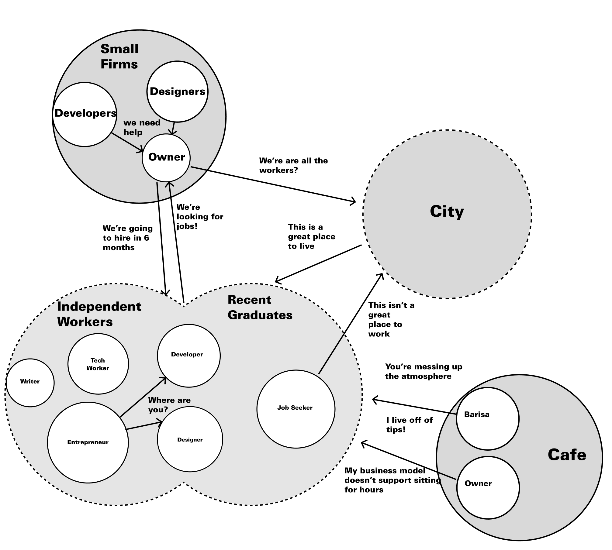

Coffee + Workspace
Creating a Casual Workspace for Recent Graduates and Independent Workers
Themes: Service Design, Community Development Goals: Our team, with the support of the Sprout Fund, sought to improve the local ecosystem of freelancers, small consulting firms, and cafes by creating an alternative casual workspace providing resources lacking in coffee shops, alleviating coffee shops from acting as de facto office spaces, and fostering a community pool of talent in the city.
A New Model of the 18th Century Penny University
18th Century London England was the birthplace of what was known as a Penny University. Unlike modern coffee shops of today, people were charged a penny for entrance, and would have access to coffee, wildly various conversations with diverse groups of people, access to the latest news through local newspapers, pamphlets, and the day’s gossip.
Today, Pittsburgh has seen an economic resurgence fueled by talent coming out of high level universities such as Carnegie Mellon and the University of Pittsburgh. Unfortunately these universities produce more talent than the city can absorb with a lack of knowledge work jobs in the area. Meanwhile, local design and development firms are constantly seeking freelance work and new full-time hires, and if those openings aren’t aligned with the academic calendar year, opportunities are missed. Those that do make a commitment to stay and make a life through freelance work are met with a lack of resources taken for granted by people working in corporations and end up working alone from laptops in cafes. Those cafes absorb the financial burden of providing office space at as low as 2 dollars per day including coffee, rent, and internet.
Conversations with Stakeholders

After understanding the desires of the project sponsor, the Sprout Fund, I sought to collect stories from the various stakeholders to understand their needs, desires, and how the pieces fit together.
Small Consulting Firms. Design and development firms were struggling to grow at a consistent pace. They had the eternal problem of growing their client base in tandem with growing their staff to meet client needs. When there was a mismatch between staff size and demand, some firms would turn down work, others would lower the quality they provided to clients, while others would fold all together.
Coffee Shops. After speaking with several coffee shop owners, it was apparent that their business models didn’t support the type of service they were providing.
One coffee shop had time limited wifi access requiring a new purchase every two hours, one shop covered the outlets so customers would have to leave after their laptop batteries died, while others would use furniture in the space to discourage laptop use. Several owners talked about the desire to stop providing wireless internet all together, but feared that a large part of their customer base used the internet for casual use, and this change could lead to their loyal customers going elsewhere.
“Why would I pay for an office when I can pay 2 dollars for an espresso?” – Independent Worker Independent Workers. Too many people working from cafes, there wasn’t a perceived problem. Many expressed the situation as their ideal working situation, a vibrant atmosphere with chance encounters that could lead to new clients, business partners, and friends. They felt that the economics of the cafe owners were not their problems.
Several noted the lack of a conference room, shared printer, and several other resource related needs, but when urging them into conversations around lack of belonging or community, it was hard for them to understand. “Do people feel belonging from their employers?” In many cases, there appeared to be a trade-off between autonomy and community which was a direct choice. Often, there was a perceived superiority in the lifestyle chosen by the independent workers.
I decided to extend my set of interviews to other cities. This couldn’t just be a problem in Pittsburgh, and gaining insights and solutions from other cities might give me the language to communicate the value I was seeking to achieve. I unintentionally worked against my cause performing interviews about the value of “office space”, a dry notion, inside of the bustling atmosphere of cafes.
Meeting with teams from YCombinator in San Fransisco I arrived at a new term—coworking. One developer worked out of a coworking space that was shared with M.C. Hammer.
A space that was filled with developers, designers, and even musicians was what I was trying to achieve in Pittsburgh. Several YCombinator teams spoke about collaborating with others in the space, finding new team members, and even finding investors for their fledgling companies from membership in the space.
After dozens of hours on the internet researching coworking, I found one of the oldest spaces in my hometown of Philadelphia, IndyHall. Traveling to Philadelphia, I met with Alex Hillman.
“IndyHall is all about people, relationships, trust, and business.” – Alex Hillman
Alex talked about 4 Pillars of IndyHall—people, relationships, trust, and business. The conversation constantly came back to this framework. He spoke about the origins of coworking coming from centuries old fraternities and artist spaces. Fraternities had a long tradition of indoctrination, and the artist spaces were rooted in the need for large spaces without the financial position to achieve it alone. I took away an understanding that orientation (indoctrination) would need to be a strong part of the end service, and expressing the value proposition of economic efficiency through sharing would lead messaging.
Conversations about Coworking

I had no strong association with freelancers or community development. From my previous conversation with Alex, I knew trust would be an issue. To improve trust with the people, I made sure to include names that would be recognized in both fields. The flyer for my first event listed an affiliation with the Sprout Fund, a local non-profit that was known for improving communities with grass-roots initiatives, and hosted the event in a design studio that had been standing for over a decade. The aesthetic was borrowed from IndyHall reflecting more of a DIY attitude rather than the cleans lines of modern cafes. In addition, I added two members to the team: Kevin, a local Barista who understood and could speak to the economic strains of the local cafes; and Laura, a volunteer mastering in non-profit business development at Carnegie Mellon.
The goal of the event was two fold: to educate the population on what could be, through stories collected in spaces in other cities, and to gather more insight into the current ecosystem to understand would could be in Pittsburgh. The first half of the workshop was full of one-on-one conversations stimulated by food provided by Kaya served gratis. To create more spontaneous conversations, instead of the standard survey form, participants were asked to answer a few demographic questions and a series of “have versus want” questions posted on the wall.
The theory being that each participant was successful. This wasn’t a conversation about needs so much as desire for cohesiveness and a greater level of economic success through the combination of services, community, and support.
During the second half of the workshop, I facilitated a conversation to educate everyone about the new concept of coworking, and to have a conversation about what could be. We looked through four lenses of the problem-solution space: belonging, environment, interactions, and resources. One key insight not previously understood was a strong desire to be seen and heard. This was a group that felt superiority through independence, but also isolation. The fact that attendees spoke about the need for child care, health insurance, and legal services, spoke to an underlying systemic problem. Freelancers, independent workers, recent jobless graduates, there was no cohesive name for this group despite many shared problems, and the fact that there was no name, meant no one knew who they were, or listened to their problems.
One Last Party
Bringing this new concept to life was always going to be tricky. The total budget for the project, provided by the Sprout Fund, was $4,000. They expected a lasting impact for their investment, and a physical space would cost orders of magnitude more.
In an attempt to bring this independent worker community to life, our first experiment was to do what we did for our initial research. To stage get-togethers with independents at local coffee shops. By turning a habit or routine towards a ritual we thought consistent communal events with likeminded people would develop into a thriving ecosystem of workers. The eventual goal, was that this prototype community would develop enough inertia to launch itself into an economically self-sustaining coworking community space.
We identified cafe owners willing to host, offered free coffee, and spurred conversations through shared experiences of isolation, lack of community, and lack of resources. The conversations were difficult as workers felt they were less productive at the meetups, while others were concerned about making too much noise and “taking over” the cafes unintentionally.
These initial experiments didn’t end with a cohesive community. The coffee shops tired of vibrant multi-hour conversations despite our coffee purchases. To make matters worse, we experienced a locust-economy effect where many attendees were there for the free coffee, and repeat attendees were infrequent as we tried to gather at different coffee shops around town.
Our primary take-away was that the feeling of not belonging was deeply tied to the experience of space. The space wasn’t theirs. It didn’t feel like theirs, and more importantly, there wasn’t a consistency of space. People didn’t have “their seat” and didn’t have visual indicators of ownership. Looking back on the Indy Hall space, I remembered my initial impressions of disorder which was unlike the clean modern lines of a 21st century cafe.
With the remaining budget we decided to rent a retail space on Penn Avenue for a month and host another party announcing our plans. The party would be filled with arts and crafts so attendees could create, and those creations would be the backdrop of the environment, continually showing ownership through permanent installations.
I would prepare coffee for everyone who showed up creating a natural time to talk about the concept as customers’ coffees brewed. Over the month, we started seeing the same faces. The 5 dollar day rate was working. People would sit and work, bring coffee and a lunch, they’d leave and come back, they’d have small talk with their desk-mates. The pressure to buy was gone, the pressure to produce in a time efficient manner was gone.
Catapult Coworking Community is Born
By the end of the month, we had 12 members ready to sign up. One of them was a graphic note-taker who volunteered to run monthly events called Show-N-Tells that would run in tandem with Penn Avenue’s First Fridays creating a natural entry point to the community. Different members would present each month, so all members would learn what specialities the lawyer had, and that the product photographer was open to business with steep community discounts. The onboarding was handled collectively, as each new member would need to introduce themselves to current members and learn how to make coffee, how to schedule the conference room, and how to use Slack. Each new member would add their face to the FaceWall so no one would be a stranger, and forgotten names were easily corrected. Coffee production turned into a ritual and natural time for conversation as members would ring a bell after brewing another pot to watch swarms of independent workers flock to their attention. Desks became messy, and “open desks” were visualized with toy bears sitting on the otherwise bare desks, but the feeling of ownership of the space was so strong, even those bears were used for personal expression. A “Hire a Freelancer” page was built on the website, generating more work than the coworking community could absorb.
The community continually evolved. For each new member, I would ask for membership dues up front and immediately drive to Ikea and back with a brand new desk and chair.
I knew that I couldn’t run the project myself, so by the end (of the beginning), I called the first town hall meeting. One of the last I would plan, but not the last of the Community. I outlined my plan to step away, gave the entire community access to all financial records, had a volunteer team of 12 out of the then close to 50 members who would act as custodians of the community, and made the entire enterprise donation based. There was fear that the move would lead to the space folding, but the community instantly doubled in size and increased margin to close to 30 percent. A kegerator was bought, a deal with Arsenal Cider, a recent Show-N-Tell alum, to supply Hard Cider was created. The first Holiday Party was thrown where a member DJed the entire night and plenty of people were there till morning.
Catapult Community ran for close to 10 years after its creation. If it weren’t for the COVID Pandemic, it might still be in existence. To this day, it is one of my most cherished projects, and I still have dozens of friends and 1000s of connections in this city who still remember “The Good Old Catapult Days”.